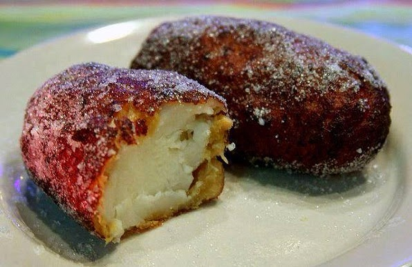

Empanadas Recipe

Ingredients Needed:
- Milk
- Platains
- Powdered sugar
- Cinnamon Sticks
- Vanilla Extract
Steps:
- Bring a pot over high heat with 4 cups of water to a boil.
- Remove the tips of the bananas. Cut the bananas into pieces of about 3 or 4 centimeters (1 1/2 inches). DO NOT remove the peel.
- When the water is boiling, add the two bananas cut into small pieces, the cinnamon and the 2 tablespoons of sugar. Let the banana boil until the open ends have expanded from the peel.
- While the banana is cooking, prepare the milk filling: Put a pot over medium heat and add 1/2 cup of milk, the vanilla and sugar and bring to a boil.
- Dissolve the cornstarch in the remaining 1/4 cup of milk and when the milk is boiling add the dissolved cornstarch little by little while stirring with a spoon (so that the milk does not stick to the bottom of the pot)
- Keep stirring the milk constantly to avoid burning the milk. In the end you will obtain a creamy paste. Remove it from the heat and let it cool in a separate container (put it in the refrigerator if you like).
- At this point the banana should be done . Remove the peel and also remove the row of seeds from the center of the banana.
- When the banana is no longer so hot that you can grab it with your hand and not burn, let's make the empanadas: take a portion of the banana dough (the size you want, but something like a golf ball) and shape it like a tortilla.
- Then put the milk in the center and close it very well. Try not to leave any space without covering the milk so that the oil does not get too angry and burns you :). Put some of the mashed plantain in the spaces where you see white (milk) to cover them.
- Place the empanadas in a saucepan with oil over medium heat. It is preferable that there is enough oil to cover them completely. But, if you don't have enough, let the oil reach halfway. When they look golden brown, turn them over. When they are golden brown, place them on a paper towel to remove the excess oil.
- If you wish, you can sprinkle sugar on them before serving.